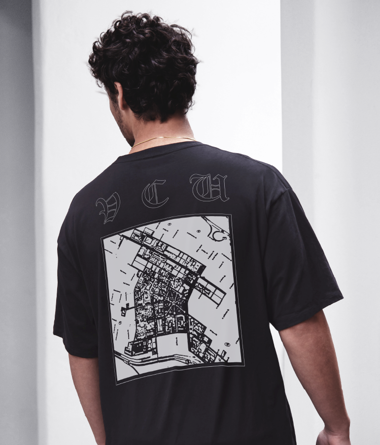
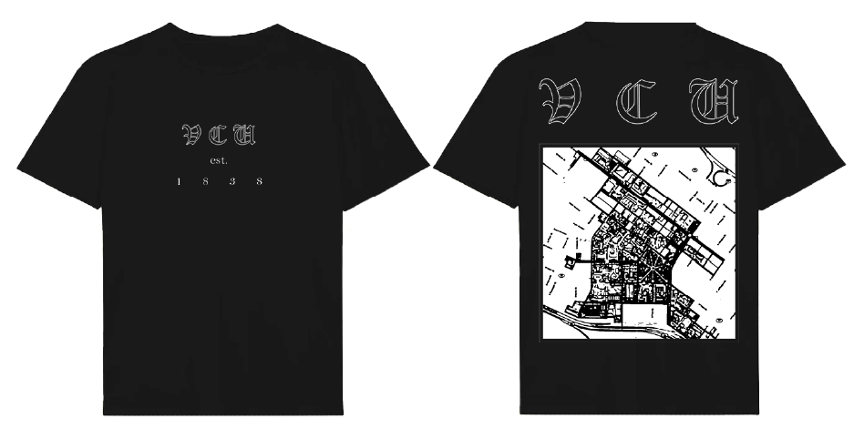
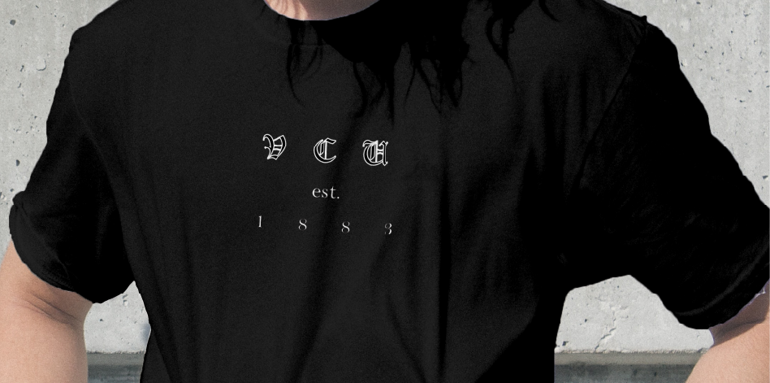
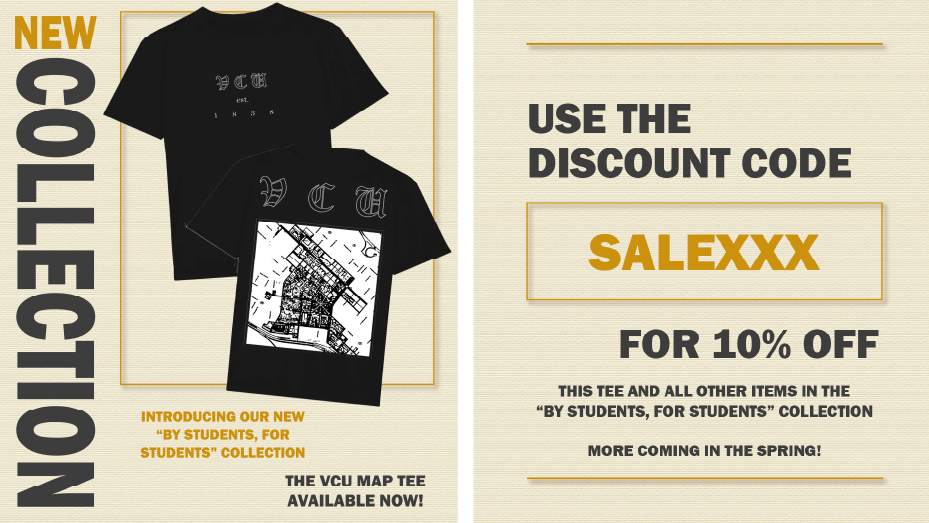
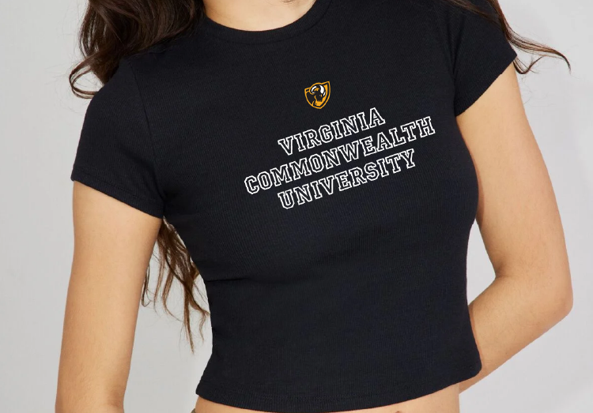
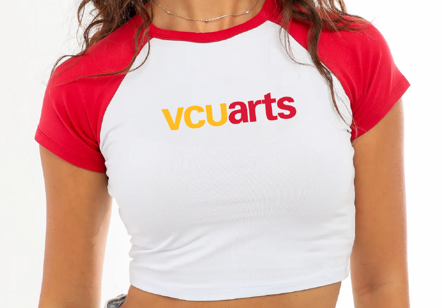
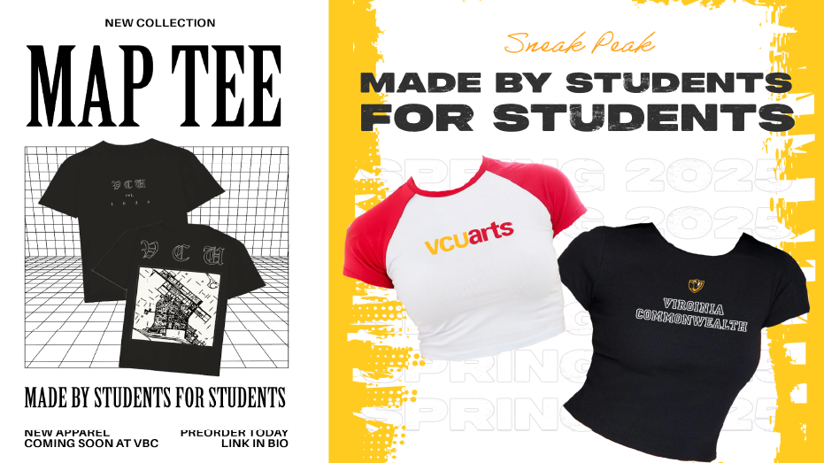
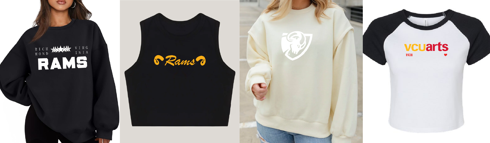

A Human Centered Design project focused on strengthening VCU student pride through more visible, desirable apparel. After early research and concept exploration, our team partnered with Virginia Book Company to develop a real “made by students, made for students” collection informed by peer feedback. We refined top performing designs into print ready apparel and collaborated with VBC on marketing initiatives, including social campaigns and a student discount. The final collection helped foster campus community while establishing a foundation for future student and VBC collaborations.








Website Hand Coded by Leah Mozeleski
Best Viewed on Desktop